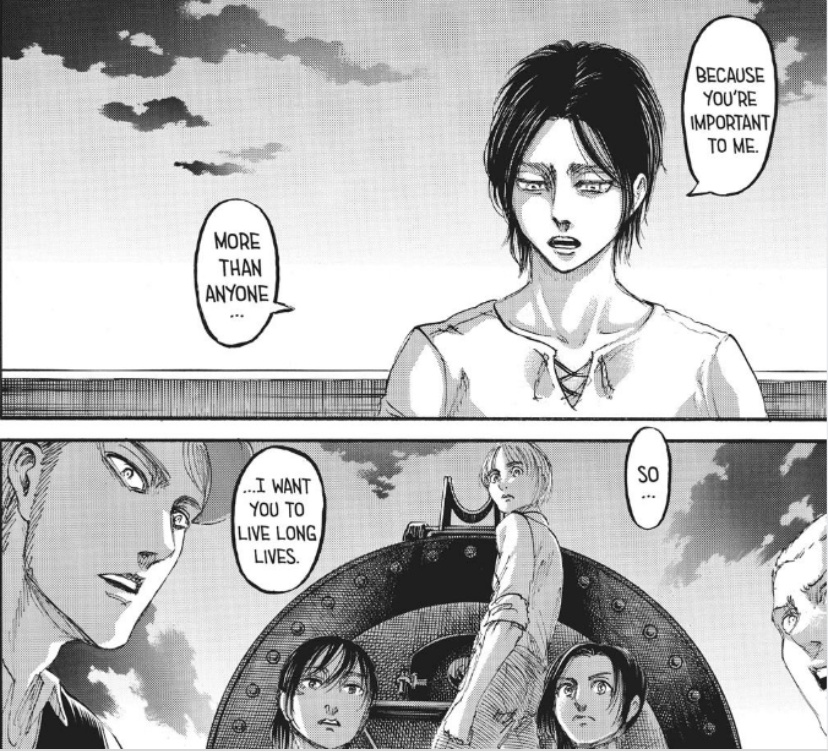

He wants to destroy everything outside the walls, and he wants to do it because he thinks that there is no way for paradise island to survive if the outside word does so too Eren has been shown time and time again that many nations (and significant chunks of their population) are insanely anti-erdian, there is constant talk of eliminating “the Erdian demons” and those of his people that do love outside paradise are treated as Sub-humans. That doesn’t end there. Marley, the strongest military power in the word (with over a million strong army) is attacking paradise and actively seeking its destruction. Eren has few years left to live, he doesn’t know who will inherit his powers, if someone he holds dears does so, that person will be condemned to a short life. On the other hand, if that person is a stranger, he has no way to trust him His half brother Zeke forces his hand by pushing his own plan “euthanasia”.If Eren doesn’t succeed, Zeke will At the end, Eren kills them because he wishes “freedom” for those that he loves, he wants them to live without fear, he wants them to live
